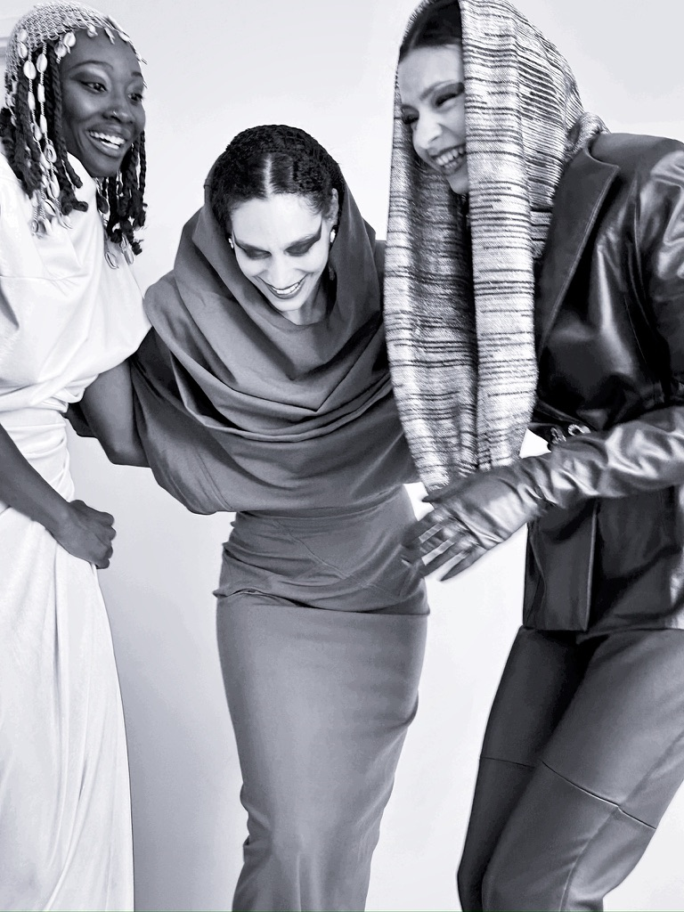

Modéliste & Assistante R&D Cuir
Curieuse, créative et passionnée par la conception
À propos
Diplômée du Bachelor Modéliste Concepteur de l'Institut Français de la Mode, j'ai acquis plus de trois ans d'expérience au sein de la maison Yves Salomon, dans le service de recherche et développement pour le cuir et la peau lainée.
J'ai développé un sens aigu du détail, du savoir-faire artisanal et de l'innovation produit. Mon parcours, fait d'essais, de remises en question et d'apprentissage, m'a permis de cultiver une approche rigoureuse et créative de la conception de vêtements.
Aujourd'hui assistante R&D chez Yves Salomon, je continue d'évoluer dans un environnement qui me permet de grandir, de créer et de m'améliorer au quotidien.
en maison de luxe
Français de la Mode
Parcours professionnel
Assistante Recherche & Développement
Yves Salomon — Paris
CDI
Développement produit cuir et peau lainée au sein du service R&D. Recherche de nouvelles matières, suivi des prototypes et contribution à l'innovation produit pour les collections de la maison.
Assistante Recherche & Développement
Yves Salomon — Paris
Alternance — 3 ans
Cuir, contrôle qualité, développement produit et suivi de production au sein d'une maison de luxe française reconnue pour son savoir-faire en fourrure et cuir depuis 1920.
Mécanicienne Cuir
L'Atelier Cuir — Paris
Alternance
Participation au contrôle qualité sur les productions Louis Vuitton. Apprentissage des techniques de montage cuir et peaux lainées.
Assistante responsable d'atelier
Yves Salomon — Paris
Stage
Upcycling de fourrure, contribution à la mise au point de cahiers des charges et participation au contrôle qualité sur les productions Dior.
Habilleuse
Théâtre de la Tempête — Paris
Stage
Fabrication d'un costume de patinage artistique en autonomie. Retouches et entretien quotidien des costumes de la pièce « Hélas ».
Costumière Habilleuse
Le Moulin Rouge — Paris
Stage
Renfort en habillage et apprentissage de conduite du show. Retouche et réparation sur les costumes du célèbre cabaret parisien.
Formation
Bachelor Modéliste Concepteur
Institut Français de la Mode
Mode et conception de vêtements. Formation en alternance alliant exigence académique et immersion professionnelle. Déléguée de classe.
CAP Vêtements de Peaux
Lycée Turquetil — Paris
Confection de vêtements et accessoires en cuir. Maîtrise d'une machine à coudre triple entraînement. Obtenu avec la note de 18/20.
Diplômes obtenus
Académie de Paris
Bachelor Modéliste Concepteur (2025), CAP Vêtements de Peaux (2022), ainsi que des certifications complémentaires en techniques de couture et confection.
Savoir-faire
Cuir & Peaux
Montage cuir, peau lainée, techniques de coupe et assemblage de matières nobles
Modélisme
Conception de patrons, moulage, mise au point et développement de prototypes
Contrôle qualité
Vérification des standards de production pour des maisons telles que Louis Vuitton et Dior
R&D Produit
Recherche de matières, innovation textile et développement de nouvelles techniques
Confection de costumes
Habillage, retouche, pressing et entretien de costumes de spectacle
Upcycling
Revalorisation de matières premières et approche durable de la création
Portfolio & CV
Découvrez mon portfolio de collection 2025 réalisé dans le cadre de mon Bachelor à l'Institut Français de la Mode, ainsi que mon CV détaillé.